Carcasa unui sistem de calcul
Carcasa unui sistem de calcul este o cutie realizată din oţel, aluminiu, plastic sau o combinaţie a acestora şi care are scopul de a protejeaza şi susţine componentele interne ale calculatorului.
Forma şi dimensiunea carcaselor este foarte variată. Elementele comune ale carcaselor indiferent de tipul constructiv sunt: butonul de pornire, oprire, resetare precum şi spaţiile pentru unităţile care pot fi adăugate. Aceste spaţii au dimensiuni de 5,25 inci respectiv 3,5 inci. La unele carcase mai vechi putem întâlni şi un buton pentru schimbarea frecvenţei ceasului intern.
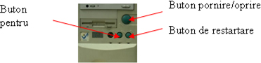
Termenul de specialitate folosit pentru descrierea formei şi dimensiunii unei carcase se numeşte forma de factor. În momentul în care vorbim de forma de factor internă (dimensiunile interne ale carcasei pentru a putea oferii spaţiu componentelor interne), acesta poate fi de două tipuri: Desktop şi Turn (Tower). Forma de factor externă (dimensiunile externe a carcasei, care trebuie să încapă într-un spaţiu definit) este importantă mai ales la carcasele sistemelor rack-abile (rack-mountable) şi blade (servere). De obicei tipul de carcasă determină tipul de placă de pază pe care o poate utiliza calculatorul.
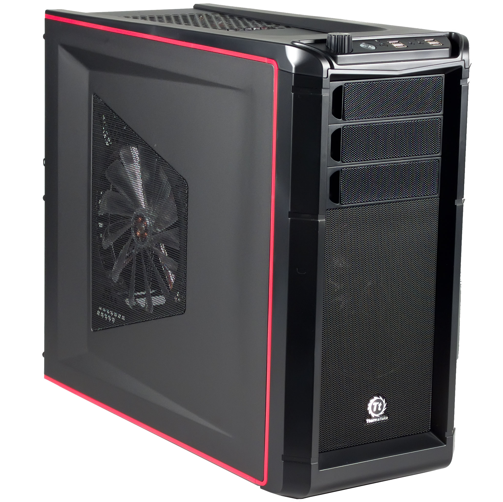
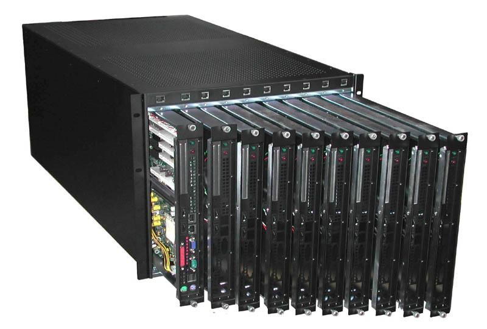
O altă funcţiile a unei carcase este aceea de a menţine componentele la o temperatură adecvată. Acesta se realizează prin ventilatoarele de carcasă care mişcă aerul în interiorul acestuia. Cu cât sistemul de calcul este mai utilizat şi mai ales cu cât puterea de calcul este mai mare, se produce o cantitate mai mare de căldură ce trebuie evacuată, prin urmare se vor instala un număr corespunzător de ventilatoare. La unele carcase pe panourile laterale putem observa aceste fante pentru admisia aerului.
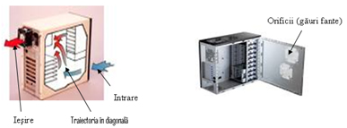
Unele carcasele mai noi au ataşate pe un panou lateral un ventilator astfel încât să asigure admisia de aer din exterior deasupra procesorului şi a plăcii video. Pe lângă protecţie faţă de factorii de mediu, carcasele previn deteriorarea componentelor din cauza descărcării electricităţii statice. Componentele interne ale calculatorului sunt împământate prin ataşarea acestora la structura carcasei. Acestea sunt roluri utilitare, dar in ultima vreme carcasa tinde sa capete si un rol estetic, multi utilizatori infrumusetindu-si carcasele in conformitate cu preferintele lor in materie de decoratiuni.
Majoritatea carcaselor sunt construite pentru a gazdui placi de baza conforme cu standardul ATX. Compania Intel a propus un standard nou, numit BTX, care aduce unele imbunatatiri (legate de ventilatie, nivelul de zgomot, asezarea componentelor, etc.) insa producatorii de carcase si placi de baza nu se grabesc sa-l adopte, mai ales ca vechiul standard nu este inca depasit. In functie de inaltimea lor carcasele se impart in miniturn ("minitower"), miditurn ("miditower") si maxiturn ("maxitower"). Carcasele miniturn sunt folosite in situatiile in care calculatorul are putine componente (de ex. un singur hardisc si o singura unitate optica) si sunt ideale daca nu avem mult spatiu la dispozitie, cum este situatia cind tinem calculatorul intr-un compartiment (raft) vertical de pe birou. Carcasele miditurn sunt cele mai folosite carcase si reprezinta solutia ideala pentru un calculator care sa nu ocupe mult spatiu pe verticala si care in acelasi timp sa permita gazduirea unui numar adecvat de componente, carora sa le fie asigu rata si o ventilatie adecvata. Carcasele maxiturn sunt folosite in special pentru servere, ele putind gazdui un numar mare de hardiscuri.
Desi toate carcasele miditurn au aceeasi inaltime, numarul de componente pentru stocarea de date (hardiscuri, unitati optice, unitati de discheta) pe care le pot gazdui variaza in functie de modelul carcasei. La partea anterioara a carcasei exista mai multe locasuri de 5,25 inci in care se pot monta unitati optice (CD-ROM, CD-RW, etc.), sub care se afla mai multe locasuri de 3,5 inci in care se monteaza unitati de discheta (de obicei doua locasuri care comunica cu exteriorul prin inlaturarea unor placute din panoul frontal) sau hardiscuri. O carcasa miditurn buna are patru locasuri pentru unitati optice, doua pentru unitati de discheta si cinci pentru hardiscuri, desi in mod evident nu vom monta poate niciodata toate aceste componente. Pentru utilizatorii casnici nu este nici o problema daca au ales o carcasa cu mai putine locasuri, de exemplu una care poate gazdui doar trei unitati optice si trei hardiscuri, mai ales ca de obicei ei vor avea instalat un singur hardisc (de capacitate medie - mare) si cel mult doua unitati optice (de ex. un DVD-ROM si un CD-RW). Este totusi de retinut faptul ca locasurile pentru unitati optice pot fi folosite si pentru instalarea panourilor de control pentru unele componente (placa de sunet mai sofisticata, dispozitiv de reglare a turatiei ventilatoarelor, etc.) deci trebuie sa luam in calcul si acest aspect la cumpararea unei carcase. Unitatile cititoare de memocarduri flash (folosite de aparatele foto digitale) pot fi si ele instalate in locasurile unitatilor optice.
In jurul carcaselor s-a nascut o activitate distincta numita "modding" ("modificare") care consta in personalizarea carcasei prin adaugarea de elemente iesite din comun, in principal cu rol estetic. Producatorii de carcase au observat aceasta tendinta (aparuta initial in rindurile pasionatilor de calculatoare) si s-au adoptat cerintelor pietei, propunind carcase care sa satisfaca si gusturile estetice ale utilizatorilor. Au aparut astfel carcase cu masti frontale colorate (mai viu sau mai sobru) sau cu un geam lateral prin care sa se poata observa lumina emisa de mici lampi cu neon instalate in carcasa sau atasate unor componente (in special ventilatoare). Unele modificari au insa si un rol utilitar, un exemplu fiind chiar geamul lateral, care ne permite sa observam functionarea ventilatoarelor sau gradul de incarcare cu praf a componentelor. O alta modificare utila este încastrarea unui miner in panoul superior al carcasei, care ne permite sa transportam calculatorul ca pe un geamantan.
Atx vs Btx
ATX a fost realizata de Intel in 1995 si a fost conceputa pentru a inlocui AT/Baby. Exista mai multe tipuri de ATX ce includ si variante mai mici, dar atata timp cat carcasa este compatibila ATX ar trebui sa acopere si variantele microATX .
Varianta BTX este un form factor aparut mai nou. Aceste tipuri folosesc paterne diferite pentru o disipare mai buna a caldurii si pentru o circulatie mai buna a aerului . Avand in vedere modificarile de structura o placa de baza BTX are nevoie si de o carcasa creata special pentru acest layout.Forma de factor btx are o racire superiora fata de atx dar din cauza ca atx este mult mai popular adoptia acestui format este este destul de inceata la ora actuala, in figura de ma jos se observa cum modificarea layoutului palcii de baza si pozitionarea diferita a componenteleor conduce la o imbunatarire a fluxului de aer care circula prin carcasa.
 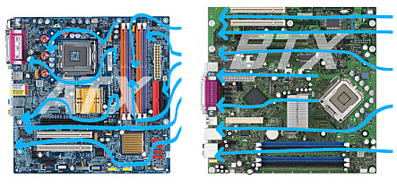
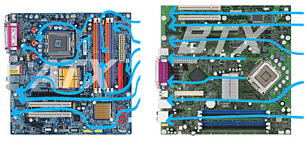
Momentan se foloseste preponderent ATX-ul , doar un mic numar de carcase/placi de baza BTX exista pe piata, iar unii dezvoltatori au lansat chiar si variante de carcase compatibile atat cu ATX cat si cu BTX.
Rolul carcasei in racire
In mod teoretic toate carcasele (indiferent de producator si de costul lor) ar trebui sa poata sa asigure trecerea prin ele a unui flux de aer care sa contribuie la racirea componentelor. Aceasta sarcina importanta este insa indeplinita de unele carcase mai bine decit de altele. Fluxul de aer trebuie sa intre prin partea de jos a mastii frontale a carcasei si sa iasa prin partea din spate a sursei de alimentare, avind deci o traiectorie diagonala, racind mai intii hardiscul si apoi componentele montate pe placa de baza. Majoritatea carcaselor au la partea inferioara a panoului frontal niste orificii (de obicei sub forma de fante) prin care poate patrunde aerul.
Exista insa si carcase care nu au astfel de orificii sau la care orificiile sunt acoperite cu un element decorativ din plastic. In cazul acestora din urma putem sa inlaturam elementul decorativ si sa scoatem la vedere orificiile care vor permite admisia unui curent de aer. Unele carcase au orificii de admisie (de obicei sub forma de gaurele) si pe panourile laterale. In cazul in care calculatorul nostru are nevoie de racire activa suplimentara putem sa montam ventilatoare pe carcasa, majoritatea carcaselor avind locuri speciale de montare a ventilatoarelor, prevazute cu gauri pentru suruburile de fixare.
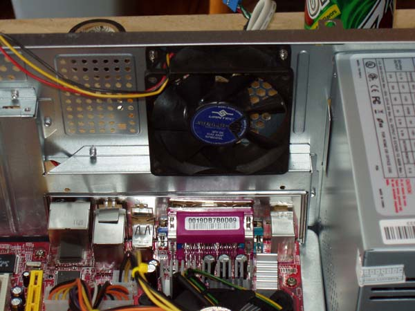
De exemplu in fata locasurilor hardiscurilor exista o placa metalica gaurita pe care se poate atasa un ventilator care sa traga aer in calculator, iar in partea din spate a carcasei exista doua (sau unul singur) locuri speciale pe care pot fi fixate ventilatoare care sa elimine aerul incalzit din carcasa. Unele carcase mai scumpe au un ventilator suplimentar pozitionat pe unul din panourile laterale, in asa fel incit sa aduca aer din exterior deasupra procesorului si placii video. Adaugarea de ventilatoare suplimentare trebuie facuta doar daca este necesar acest lucru, pentru ca ele contribuie la poluarea fonica si pot cauza disconfort utilizatorului
Forme de factor neconventionale
Desi majoritatea carcaselor sunt de foma tower, in ultima perioda la cererea entuziastilor de calculatoare si moderi diversi producatori de carcase ( in special lian li) au inceput sa faca carcase cu suport pentru placile de baza atx dar cu factori de forma din ce in ce mai inediti.Aici aveam mai multe „standarde” neconventionale care au o priza din ce in ce mai mare in lumea entuziastilor de calculatoare si nu numai.
Carcase de tip birou (lian li DK-02)
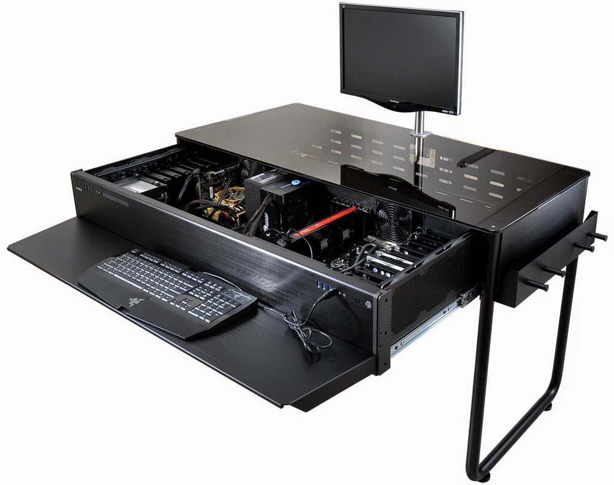
Inainte ca producatorul lian li sa intorduca acest model de carcasa pe piata multi dintre entuziasti le construiau ei insusi.
Aceasta carcasa este prevazuta cun un panou din sticla temperata ,pentru prevenirea ranilor in caz de spargere ,ce permite vizualizarea componentelor, zona dedicata tastaturii este acoperita in intregime in piele naturala si ajustsabila in trei puncte pe inaltime. Desemenea este construita din aluminiu are incuietoare suport pentru unutati oprice slim, porturi usb 3.0 si audio pe partea din fata ,toate gaurile de aerisire au filtre anti praf.
Supecificatii interne:
- 8 bayuri de 3.5 inch pentru primul sistem
- 9 bayuri de 3.5 inch pentru sistemul 2
- 8 ventilatoare de 120 de mm
- compatibilitatea pentru urmatoari factori de forma :HPTX,XL-ATX,ATX ,Micro-ATX
Exista mai multe modele bazate pe aceeasi idee modelul din poza poate gazdui doua sisteme atx in acelasi timp dar exista si modele mai mici doar pentru un singur sistem , pentru modelul din imagine pretul poate ajunge la 1300 de dolari.
Carcase dublu Tower(lian li pc-d600)
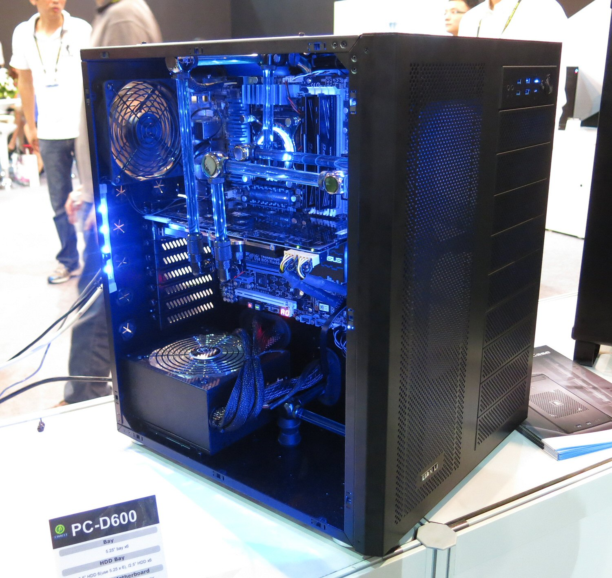
Aceste carcase au o forma de factor dubla fata de o carcasa tower normala lucru care duce la o capacitate de a gazdui un numar foarte mari de componente precum si un sistem de racire pe apa foarte performant ca si cel din imaginea alaturata
PC-D600 are un design cu două compartimente. Compartimentul stânga deține placa de baza, placa grafică și de alimentare cu energie, în timp ce compartimentul drep deține unități optice și hard disk-uri. Cu componentele generatoare de căldură separat, se creează o soluție termică per ansamblu mai bună.
Caracteristicii:
- 6 bayuri de 3.5 inch
- 6 bayuri de 2.5 inch
- 3 ventilatore de 140mm
- 3 ventilatore de 120mm
Carcse care se pot stivui (HAF Stacker 935)
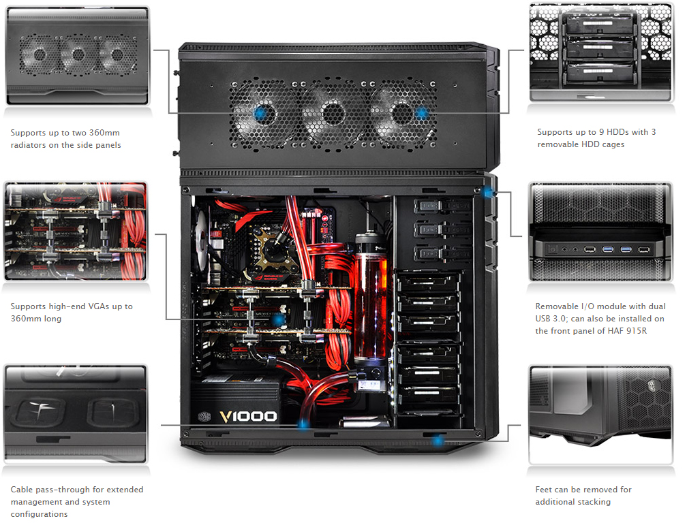
HAF Stacker - primul sistem extensibil, care permite upgrade-uri exterior modulare pentru entuziaști.HAF 935 este format din 915F / R (caz Mini-ITX) și HAF 925 (la mijlocul-turn), care susține nu doar până la 360mm radiatoare ci si 11 ventilatoare, de asemenea, până la quad VGA. Datorită numeroaselor garniturile de cauciuc, extinderea si gestionarea cablurilor este foate usoara.
Caracteristicii:
- 9 bayuri de 3.5 inch
- 10 bayuri de 2.5 inch
- 2 ventilatore de 140mm
- 8 ventilatore de 120mm
Carcase de tip htpc (lian li pc-c37)
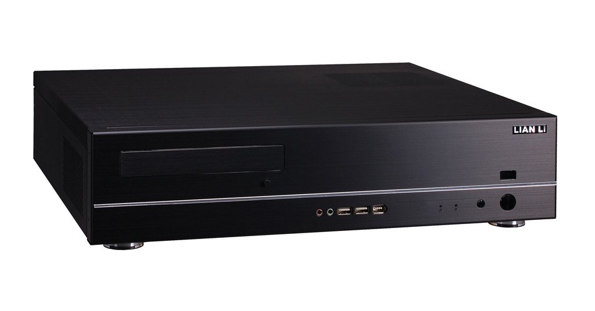
Un PC home theater (HTPC) este un dispozitiv de convergență care combină unele sau toate capacitățile unui computer personal cu o aplicație software care suporta video, fotografie, redare audio, și, uneori, funcționalitate de înregistrare video.
Aceste carcase au aparut in urma cereri utilizatorilor care vroiau sa inlocuiasca dvd playerele cu ceva mai performant, aceste carcase au un factor de forma mic deobicei comatibili cu mini si micro Atx.
Obiectivul prinicipal al carcaselor de acest tip este acela de a ocupa cat mai putin spatiu sa aiba un desing care sa le ajute sa se integreze subtil cu mediul in care vor fi folosite si sa emita o cantitate de zgomot cat mai redusa.
Pentru a indeplini aceste cerinte carcasa lian li pc-c37 foloseste picioare anti vibratie precum si arcuri ante vibratie pe panoul care se deschide , aceata carcasa are si un design minimalist cu un finisaj exterior de aluminiu periat . Spatiile disponibile pentru dispozitivele de stocare cat si numarul de ventilatorare este redus carcasa suportand doar 2 bayuri de 3.5 si soar un ventilator de 70 de mm.